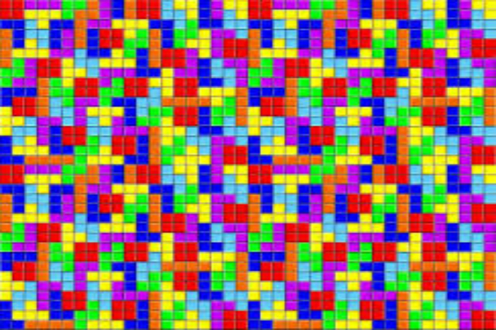

ACADEMIC ACHIEVEMENTS
- Cumulative Performance Index of 9.4 on a scale of 10 (2015)
- Institute Academic Award for excellent academic performance (2013-2014)
- Awarded AP grade* for outstanding academic performance in all 3 Mathematics courses done so far (Calculus, Linear Algebra, Differential Equations) (2013 - 2014)
- Awarded AP grade* in Engineering Drawing and Physical Chemistry courses (2013 - 2014)
- All India Rank 33 in JEE Advanced 2013 among 0.15 million candidates (2013)
- 99.96 percentile in JEE Main among 1.5 million candidates with all India highest score in Chemistry (2013)
- Gold medal and certificate of merit for being in the top 35 of the country in Indian National Physics Olympiad (2013)
- Among the top 40 of the nation to have cleared Indian National Chemistry Olympiad (2013)
- Among the top 8 who were selected to represent India at the 14th Asian Physics Olympiad, Bogor, Indonesia (2013)
- Secured an All India Rank of 113 in KVPY among 0.1 million candidates (2013)
- CBSE certificate of merit in Physics for being among the top 0.1% students and securing a perfect 100/100 in the subject (2013)
- Conferred with the title of Amul VidyaShree for securing 97.4% marks in ICSE and being the school topper (2011)
*An AP grade is given to at most 2% of total students in a batch for excellent performance in the course
COURSES UNDERTAKEN
CS related courses
|
Statistics Minor Courses
|
Online Courses
|
Other Courses
|
*ongoing courses
LANGUAGE AND PROGRAMMING SKILLS
Programming Languages
|
Web Development
|
Android Development
|
Machine LearningGNU OctaveMATLAB SciLAB |
Others
|
Besides the ones mentioned above, I am also aware of a wide variety of other useful Linux and Windows based tools
PROJECTS AND INTERNSHIP EXPERIENCE
Summer Internship at TU Braunschweig, Germany, under Professor Sandor Fekete (Summer 2015)
|
|

|
Blog android application, self project (Summer 2015) |

|
Universal Asynchronous Receiver Transmitter, under Professor Ashutosh Trivedi (Spring 2015)
|
Django Web Application, under Professor Sharat Chandran (Autumn 2014)
|
|

|
Unit Canonicalization and Country Identification Module, under Professor G. Ramakrishnan (Autumn 2014)
|
Rube Goldberg Machine, under Professor Sharat Chandran (Autumn 2014)
|
|
|  |
Game of Tetris, under Professor RK Joshi (Spring 2014)
|
Tank shooting game, under Professor Supratim Biswas (Autumn 2013)
|
I also worked with Plancess Eduventures to develop video based content for them
BELOW IS A LINK TO MY RESUME
Resume
OTHER ACTIVITIES IN WHICH I AM INVOLVED
| Mentoring as a DAMP mentor | I am currently one of the 14 Mentors under the Department Academic Mentorship Program. As a Department Academic Mentor, I am responsible to guide 9 students of second year with their academics and ensure that they perform well in their courses. I am also responsible to guide them on what courses to take and help them personally if they are facing difficulty in a particular course. |
| Mentoring as a Blogger | I am an active blogger and I write articles on preparation of competitive examinations in India at the +2 level (primarily JEE). My blog received a great response from the student community and I receive more than 2000 page views daily. As a part of learning and to provide a richer reading experience for the blog viewers, I developed an android application for my blog whose source code can be found here. I am also associated with Wiley publishers and I write blog articles for Wiley's Blog. |
| Mentoring as a Teaching Assistant | I served as a teaching assistant for the calculus course when I was in my second year. Here is the feedback I received as a teaching assistant. Since I enjoyed my very first TAship, I continued to be a TA in the next semester for the Electricity and Magnetism course. |
| SpeedCubing | When I was in 10th standard, my uncle gave me a Rubik's cube and challenged me to solve it. By the evening, I gave him a solved cube and since then, I have been an active speedcuber, solving the cube in as low as 20 seconds. You can find me doing that here. Additionally, I was also a convener of Rubik's club at our institute in my second year. |
| Robotics | Teaming up with my friend Shudhatma Jain, I developed an Arduino based line follower and we stood 4th overall in the competition. I was also active in robotics in my school and with the assistance of 2 other friends, I developed a line follower and a ball searcher and grabber using LEGO kit in 10th standard. I demonstrated the car's steering wheel mechanism which helped me to grab the best robotics activity student award when I was in high school. |
| Animation | I was always fascinated by computer animations and so, decided to make my own :). In the 9th standard, I made a simple animation of a car accident and was awarded the best computer science activity certificate for the year. Thereafter, I continued my passion for animation and went on to inter-school mime making event (in Adobe Flash CS5) for 2 consecutive years. |
| Skating | I have been rolling on wheels since I was in 1st standard. I took skating activity in the school in 8th standard. I was an active skater and used to play skating hockey as well |
| Music | In 7th standard I joined casio activity in school and tried my hands on keyboard. |
| Cricket | I love to play cricket and I have been involved in the game since my childhood days. |
CONTACT ME
 |
 |
 |